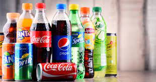

Pourquoi reduire notre consommation de produits et boissons sucrées :

entraîner à long terme des maladies comme le diabète. Le sucre est aussi responsable de l'apparition de caries dentaires. Mais consommés de temps en temps et en quantité raisonnable, les produits sucrés sont compatibles avec une alimentation favorable à la santé.
Consommé en grande quantité, il peut
Voila des exemples :
- Nestea (9 morceaux de sucre)
- Monster (8,4 morceaux de sucre)
- Tropico (7,9 morceaux de sucre)
- Pepsi (7,2 morceaux de sucre)
- Coca Cola (7 morceaux de sucre)
- ect...